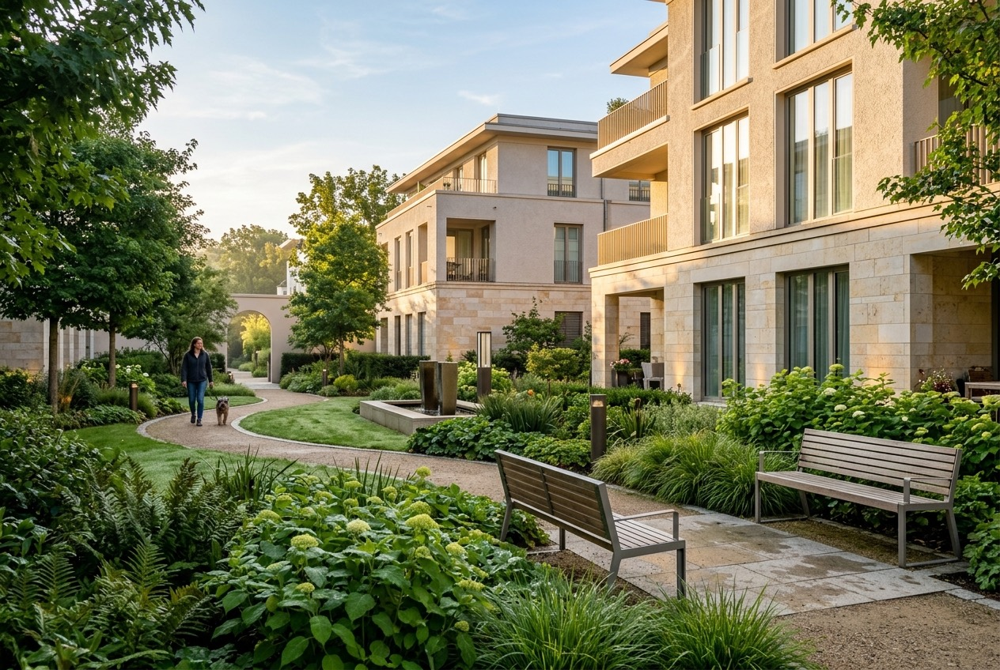
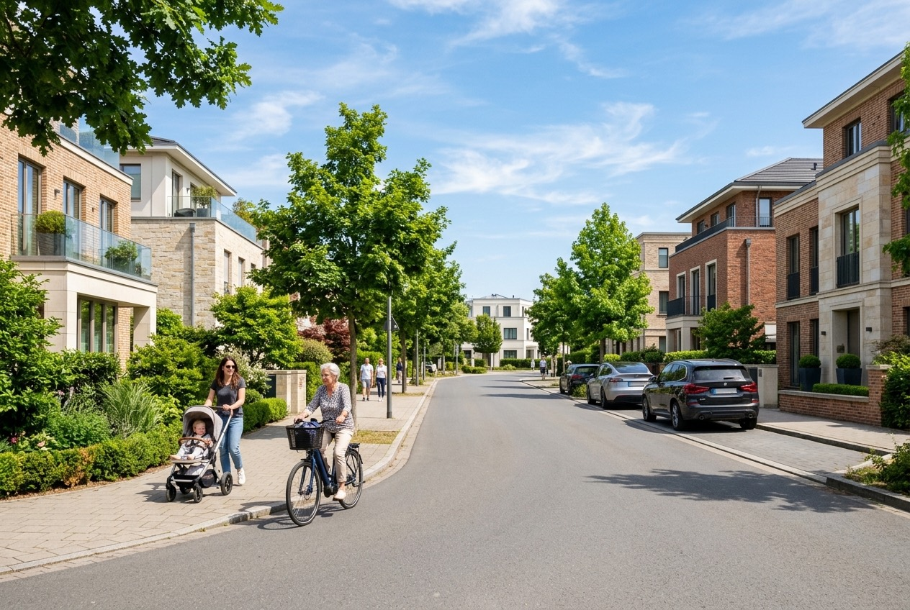
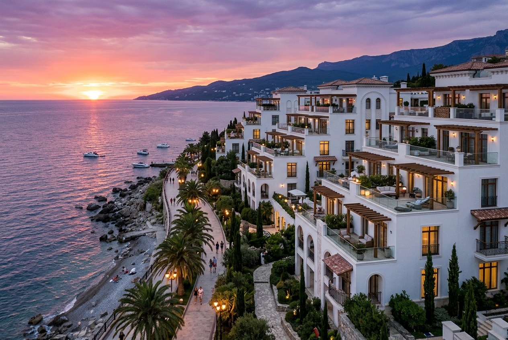
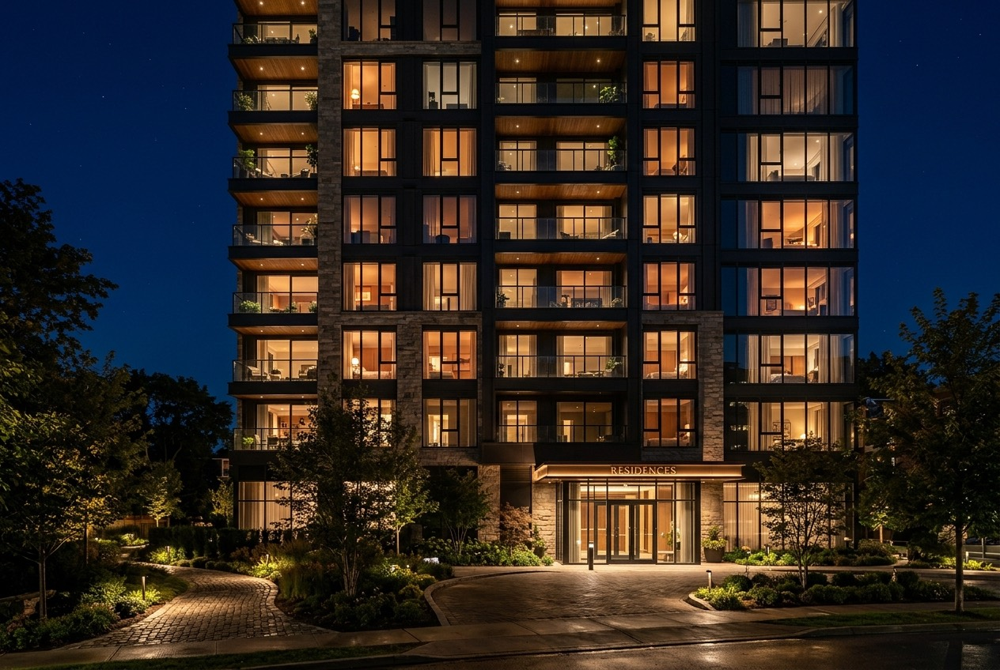

Один день — от первого света над прудом до последнего окна, погасшего у моря. Скролл — это время.
Роса на газонах Метафоры, первые бегуны, свет ещё золотой. Дворы без машин слышат только шаги.

Велосипеды, коляски, обед на террасе кафе на первом этаже Леонова. Жизнь квартала — на улице.

В СОКе солнце садится прямо в воду. С террасы Ласки виден весь горизонт — и ни одной лишней мысли.

Город спит, но в окнах Монблана — свет: кто-то читает, кто-то смотрит на огни. Дом работает тихо.
